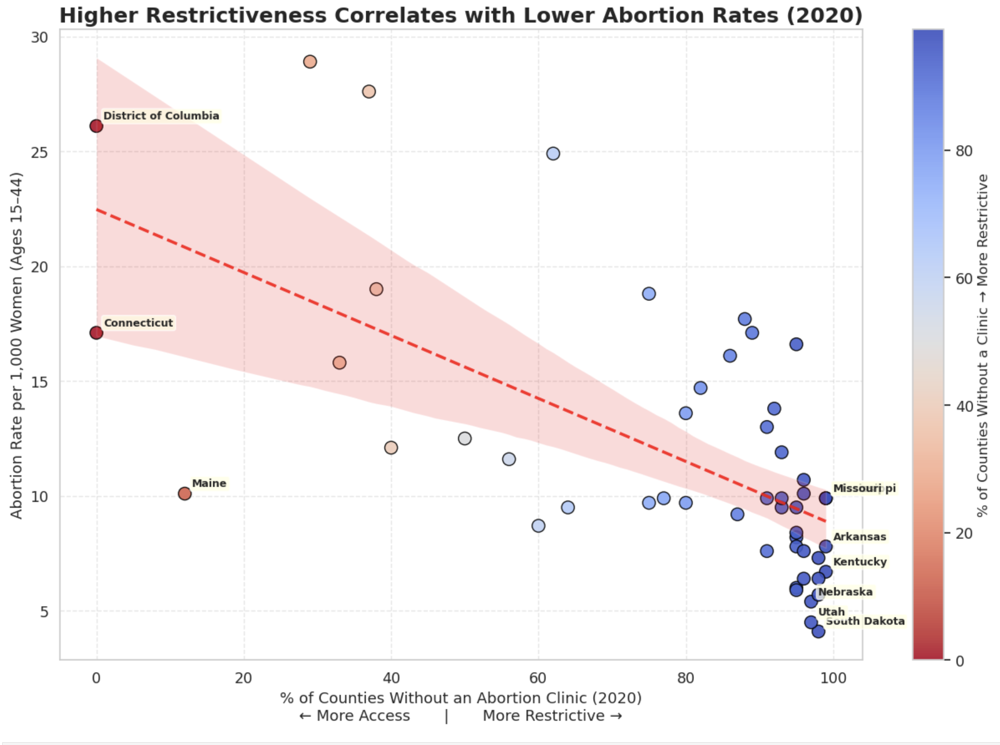

Proposition: "Restrictive abortion policies lead to lower abortion rates."
FOR the Proposition

Design Decisions and Rationale
-
Decision 1 – Variable Selection (Score: 2)
We plotted clinic scarcity vs. abortion rate per 1,000 women. The weak negative slope visually supports the idea that restrictions reduce local abortion incidence. -
Decision 2 – Trend Line (Score: 1.5)
The slight downward slope implies that more restrictive states see marginally fewer abortions, consistent with the proposition’s claim. -
Decision 3 – Color Encoding (Score: 1.5)
A balanced cool–warm gradient avoids emotional overtones and maintains credibility while showing variation clearly. -
Decision 4 – Selective Annotations (Score: 1)
Highlighting Missouri and South Dakota helps emphasize states that exhibit strong policy–rate alignment. -
Decision 5 – Neutral Framing (Score: 2)
The title emphasizes correlation, not causation, reinforcing analytical neutrality while supporting the proposition.
Data limitations: Data are state-level and do not account for telehealth access, border travel, or population changes. Restrictiveness measures may miss local exceptions or enforcement gaps.
Potential confounders: Cross-border travel, differences in reporting standards, Medicaid and insurance coverage, socioeconomic factors, and access to private healthcare providers.
AGAINST the Proposition

Design Decisions and Rationale
-
Decision 1 – Variable Selection (Score: 2)
I paired “% of counties without a known clinic” with “% of residents traveling out of state for abortion care.” This pairing challenges the proposition by showing how restrictions shift, rather than reduce, abortion access. It’s fully earnest because both metrics are transparent and directly relevant to the policy discussion. -
Decision 2 – Trend Line (Score: 1.5)
The dashed red trend line conveys a positive relationship between restrictiveness and out-of-state travel, implying that policy limits drive displacement. This framing effectively argues against the idea that restrictions reduce total abortions. -
Decision 3 – Color Encoding (Score: 1.5)
The monotone red scale visually reinforces restrictiveness, but is still readable and not overly dramatic. It’s persuasive but ethical, since it communicates intensity without exaggeration. -
Decision 4 – Selective Annotations (Score: 1)
Annotating states like Mississippi, Louisiana, and California highlights real-world contrasts. This helps viewers contextualize the data while subtly directing attention to outliers supporting the argument. -
Decision 5 – Neutral Framing (Score: 2)
Using “correlates” rather than “causes” keeps the framing factual and avoids overstating causation, maintaining credibility while still persuasive.
Data limitations: The data reflect only 2020, before major post-Dobbs policy changes. “% of counties without a clinic” is a coarse proxy that ignores capacity, telehealth access, and within-state disparities. State-level aggregation hides urban–rural variation and border-county effects.
Potential confounders: Neighbor-state policies and travel distances; income, insurance, and Medicaid coverage; population density; gestational limits and wait times; and the presence of nonprofit or telehealth networks facilitating access.